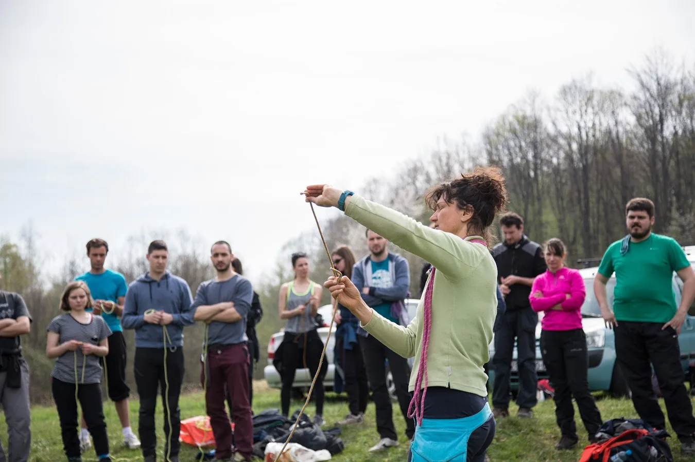

Kreće 51. Zagrebačka speleološka škola
Eto, prvih pola stoljeća speleoloških škola (pola stoljeća, eeeeej!) je za nama, krećemo u drugu polovicu, s voljom i na vrijeme! Na vama je samo da budete brzi, ako mislite biti veliki dio malenog kruga pravih…

Eto, prvih pola stoljeća speleoloških škola (pola stoljeća, eeeeej!) je za nama, krećemo u drugu polovicu, s voljom i na vrijeme! Na vama je samo da budete brzi, ako mislite biti veliki dio malenog kruga pravih istraživača i maleni dio velike povijesti našeg PDS Velebit!
Kada je već spominjemo, za početak riječ dvije o toj povijesti:
Škola se odvija po programu Komisije za speleologiju Hrvatskog planinarskog saveza. Tradicija speleološke edukacije počinje još davne 1957. godine, kada je održan prvi speleo tečaj u Ogulinu, dok je prva zagrebačka speleološka škola organizirana 1971. godine.
Cilj škole je da polaznici usvoje praktična i teorijska znanja o boravku u prirodi i podzemlju, te da se nauče kretati po speleološkim objektima i da savladaju tehniku penjanja i spuštanja po užetu. Naučit će i sve o planinarskoj i speleološkoj opremi, o orijentaciji, uzlovima koji se koriste u speleologiji i topografskom crtanju speleoloških objekata. Biti će prezentirane i teme poput povijesti speleologije, arheologije i paleontologije u speleologiji, biospeleologije, osnove geologije, krša i krških fenomena, klime podzemlja, alpinističkih tehnika u speleologiji, zaštite speleoloških objekata, opasnosti u planinama i speleološkim objektima, prve pomoći i spašavanja.
Č v orologija - bitan element znanja svakog speleologa. Naučite kako napraviti najbolji čvor (uzao) u svakoj situaciji. Ili npr kako svezati zločestog brata ili sestru po potrebi.
Škola će se sastojati od teorijskog i terenskog dijela. Teorijski dio čine predavanja koja će se održavati svake srijede od 18 do 21 h u prostorijama SO PDS Velebit (Klaićeva 42, Zagreb). Terenski dio obuhvaća jednodnevne i dvodnevne izlete vikendima na različite lokacije u Hrvatskoj, na kojima će se uvježbavati speleološke tehnike te posjetiti niz speleoloških objekata.
Trajanje škole je predviđeno u razdoblju od 07.04. do 09.05.2021. godine.
Adrenalinski parkovi su za male bebe. Speleološka škola je za face.
Osim što će polaznici steći mnoga korisna znanja, poznato je da se na speleološkim školama uvijek svi dobro zabave na druženjima uz vatru i gitaru, te se razviju prijateljstva i doživljaji koji se pamte cijeli život. Također, polaznici se mogu i nakon završene speleološke škole priključiti daljnjim aktivnostima Speleološkog odsjeka Velebit i drugih speleoloških odsjeka u Hrvatskoj.
UPISI:
- UPDATE - 18.2.2021. !
SVA MJESTA U ŠKOLI SU POPUNJENA! Prijave više nisu moguće.
UVJETI UPISA:
- biti član planinarskog društva (bilo kojeg u HPS-u, a možete se i na licu mjesta učlaniti u PDS Velebit)
- donijeti liječničku potvrdu da nema ograničenja u bavljenju fizičkom (sportskom) aktivnosti
- potpisati izjavu o odgovornosti
Požurite jer je broj polaznika ograničen i mjesta se brzo popunjavaju!
Sa svim kandidatima će biti obavljen i kratak razgovor u kojem će im se pružiti sve potrebne informacije o speleološkoj školi.
Napomena:
Vođa škole zadržava pravo izmjene predavanja i terenskog dijela škole. Termin škole može biti pomaknut ili otkazan, ovisno o epidemiološkoj situaciji.
Voditeljica škole: Ela Kovač
Email: elakovac177@gmail.com
Mob: 097 642 1175
Više o našim školama, uz bogate galerije fotografija pronađite ovdje:
ZAGREBAČKA SPELEOLOŠKA ŠKOLA
A pogledajte i filmić sa jednog izleta na kojem smo, osim tehnika penjanja i spuštanja po užetu učili i kako se kretati kroz aktivne speleološke objekte (što znači da je u njima prisutan stalni vodeni tok u kojem se može taako lijepo plivati):
https://www.youtube.com/embed/lzhGqgG9p-4